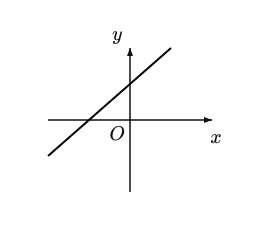
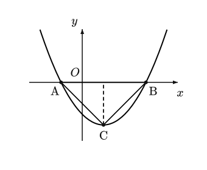
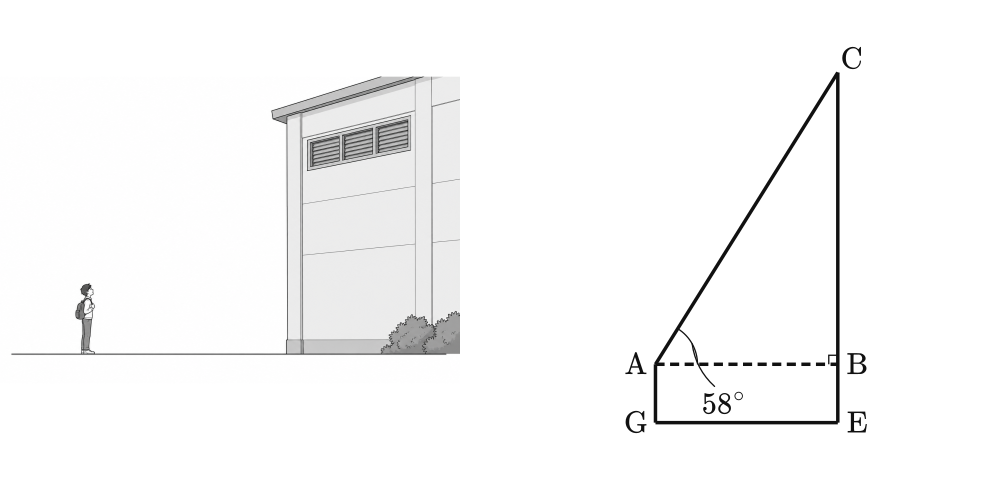
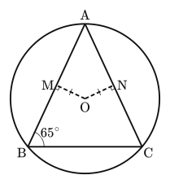
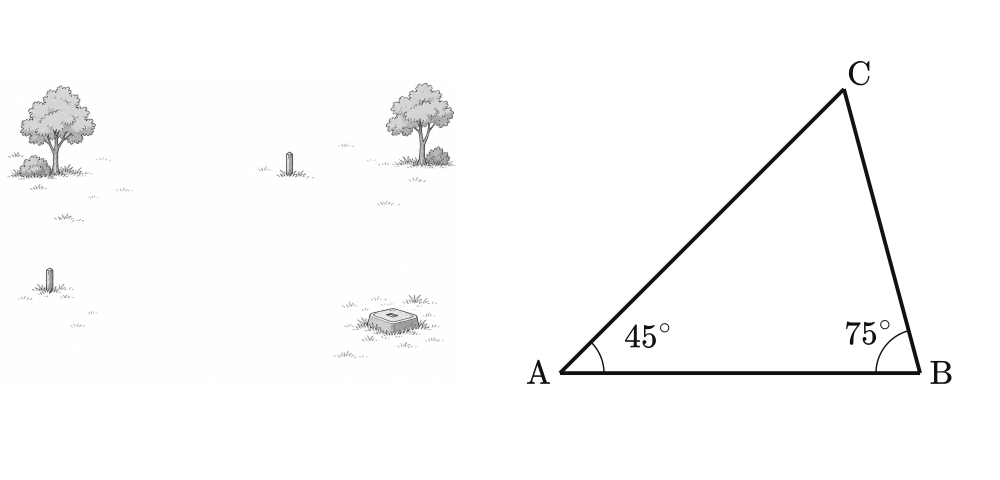

이차함수 y=ax2에서 x>0일 때, a<0이면 x의 값이 증가할수록 y의 값이 감소하고, a>0이면 y의 값이 증가한다. 또 a의 절댓값이 클수록 그래프의 폭은 좁다. ㉠의 조건 1을 만족하는 카드는 계수가 음수인 나, 다, 라이다. 이들의 계수의 절댓값은 각각 31, 51, 3이다. 카드 마의 계수의 절댓값은 21이므로 마보다 폭이 좁은 것은 라이다. 따라서 ㉠은 라이다. ㉡의 조건 1을 만족하는 카드는 계수가 양수인 가, 마이다. y=x2의 그래프보다 폭이 넓으려면 계수의 절댓값이 1보다 작아야 한다. 가의 계수는 3, 마의 계수는 21이므로 ㉡은 마이다. 따라서 ㉠, ㉡에 들어갈 카드는 차례로 라, 마이고 정답은 ③이다.
4.4점
이차함수 y=ax2−6x−b의 그래프의 개략적인 모양이 아래 그림과 같다. 이때 일차함수 y=−ax+b의 그래프로 알맞은 것은? (단, a, b는 상수이고, 보기의 그림은 기울기와 y절편의 부호를 나타낸 개략적인 그래프이다.)
①


②

주어진 포물선은 아래로 볼록하므로 x2의 계수 a는 양수이다. 즉, a>0이다. 또 포물선이 y축과 만나는 점은 x축보다 위에 있으므로 y절편 −b는 양수이다. 따라서 b<0이다. 일차함수 y=−ax+b의 기울기는 −a<0이고 y절편은 b<0이다. 그러므로 오른쪽으로 갈수록 내려가고, y축과 x축보다 아래에서 만나는 직선이어야 한다. 보기 중 두 조건을 모두 만족하는 것은 ⑤이다.
5.4점
그림과 같이 이차함수 y=x2−2x−3의 그래프가 x축과 만나는 두 점을 x좌표가 작은 것부터 차례로 A, B라 하고, 꼭짓점을 C라 하자. 삼각형 ABC의 계산 기록표를 완성하려고 한다.
기록 항목
밑변 AB의 길이
높이
넓이
계산 결과
㉠
㉡
㉢
㉠, ㉡, ㉢에 들어갈 수를 차례로 바르게 짝지은 것은?

①
2, 4, 4
②
4, 3, 6
③
4, 4, 16
④
4, 4, 8
⑤
6, 4, 12
정답·해설 검토
④
x축과 만나는 점에서는 y=0이므로 x2−2x−3=0이다. 이를 인수분해하면 (x+1)(x−3)=0이므로 x=−1 또는 x=3이다. 따라서 A(−1,0), B(3,0)이고 밑변 AB의 길이는 3−(−1)=4이다. 또 y=x2−2x−3=(x−1)2−4이므로 꼭짓점 C의 좌표는 (1,−4)이다. 밑변이 x축 위에 있고 C가 x축보다 4만큼 아래에 있으므로 높이는 4이다. 따라서 삼각형의 넓이는 21×4×4=8이다. ㉠, ㉡, ㉢에 들어갈 수는 차례로 4, 4, 8이므로 정답은 ④이다.
10.4점
체육관 환기창을 관측할 위치를 정하려고 한다. 아래 관계도에서 A는 민준의 눈, G는 발밑, C는 환기창의 중심이며, E는 창 중심 바로 아래 지면이다. 지면은 수평이고 벽은 수직이다. B는 눈높이의 수평선과 벽이 만나는 점이다.
관측 기록
값
지면에서 환기창 중심까지의 높이 CE
9.6m
민준의 눈높이 AG
1.6m
환기창 중심을 올려다본 각 ∠BAC
58∘
각
sin
cos
tan
58∘
0.8480
0.5299
1.6003
위 삼각비 표를 이용할 때 민준의 발밑에서 벽까지의 수평거리 GE는? (소수점 아래 둘째 자리에서 반올림한다.)

①
4.5m
②
4.8m
③
5.0m
④
5.2m
⑤
8.0m
정답·해설 검토
③
눈높이 위의 높이는 CB=9.6−1.6=8(m)이다. 직각삼각형 ABC에서 tan58∘=ABCB이므로 표의 값을 대입하면 1.6003=AB8이다. 따라서 AB=8÷1.6003=4.999⋯이다. 지면과 눈높이의 수평선이 평행하므로 GE=AB이며, 소수점 아래 둘째 자리에서 반올림하면 5.0m이다. 정답은 ③이다.
16.4점
원 O 위의 세 점 A,B,C를 이은 도형에 대하여 다음과 같은 수선 검사 기록을 얻었다.
∘ M은 현 AB 위, N은 현 AC 위의 점이다. ∘ OM⊥AB, ON⊥AC이고 OM=ON이다. ∘ ∠ABC=65∘이다.
이 기록으로 알 수 있는 현의 길이 관계와 ∠BAC의 크기를 차례로 적은 것으로 옳은 것은?

①
AB=BC, 50∘
②
AB=AC, 65∘
③
AC=BC, 50∘
④
AB=AC, 50∘
⑤
AB=AC, 115∘
정답·해설 검토
④
한 원에서 중심으로부터 같은 거리에 있는 두 현의 길이는 같으므로 OM=ON에서 AB=AC이다. 따라서 삼각형 ABC는 AB,AC를 같은 두 변으로 하는 이등변삼각형이다. 두 밑각의 크기가 같으므로 ∠ACB=∠ABC=65∘이다. 삼각형의 세 내각의 크기의 합은 180∘이므로 ∠BAC=180∘−65∘−65∘=50∘이다. 그러므로 현의 길이 관계가 AB=AC이고 꼭지각이 50∘인 ④가 정답이다.
17.5점
가로가 9cm, 세로가 6cm인 직사각형 창틀 모형 ABCD에 원형 장식을 끼웠다. 왼쪽 위 꼭짓점은 A, 왼쪽 아래는 B, 오른쪽 아래는 C, 오른쪽 위는 D이다. 원형 장식은 윗변 AD, 오른쪽 변 DC, 아랫변 BC에 각각 E,H,G에서 접한다. 꼭짓점 A에서 아랫변의 점 M까지 설치한 곧은 지지대 AM도 원형 장식에 F에서 접한다. M은 선분 BG의 내부에 있고, F는 선분 AM의 내부에 있다. 지지대 왼쪽의 삼각형 영역 ABM의 넓이는? (단, O는 원형 장식의 중심이며 지지대의 두께는 생각하지 않는다.)
①
9cm2
②
12cm2
③
227cm2
④
15cm2
⑤
18cm2
정답·해설 검토
③
원이 창틀의 윗변과 아랫변에 접하므로 지름의 길이는 6cm이고, 반지름의 길이는 3cm이다. 오른쪽 변에도 접하므로 DE=CG=3cm이다. 따라서 AE=9−3=6cm, BG=9−3=6cm이다. 한 외부점에서 원에 그은 두 접선의 길이는 같으므로 AF=AE=6cm, MF=MG이다. BM=xcm라 하자. M은 선분 BG의 내부에 있으므로 0<x<6이고, MG=(6−x)cm이다. F가 선분 AM의 내부에 있으므로 AM=AF+FM=(12−x)cm이다. 직각삼각형 ABM에서 피타고라스 정리를 적용하면 (12−x)2=62+x2이다. 이를 전개하여 정리하면 144−24x=36, 즉 x=29이다. 따라서 삼각형 ABM의 넓이는 21×6×29=227cm2이므로 정답은 ③이다.
18.4점
이차함수 y=ax2−2ax+b(a=0)의 그래프에 대한 기록이 다음과 같다.
항목
기록
그래프가 지나는 점
(−1,14)
두 상수의 합
a+b=10
꼭짓점이 놓인 직선
y=−2x+c
이 기록을 모두 만족시키는 상수 c의 값은? (단, a, b, c는 상수이다.)
①
4
②
6
③
8
④
10
⑤
14
정답·해설 검토
③
그래프가 점 (−1,14)를 지나므로 x=−1, y=14를 대입하면 14=a(−1)2−2a(−1)+b=3a+b이다. 따라서 3a+b=14, a+b=10을 함께 만족한다. 두 식을 빼면 2a=4이므로 a=2이고, a+b=10에서 b=8이다. 한편 이차함수의 식을 완전제곱식으로 나타내면 y=a(x2−2x)+b=a[(x−1)2−1]+b=a(x−1)2+(b−a)이다. 그러므로 꼭짓점의 좌표는 (1,b−a)=(1,6)이다. 이 점이 직선 y=−2x+c 위에 있으므로 6=−2×1+c이다. 따라서 c=8이므로 정답은 ③이다.
19.7점
공원 측량 기록에서 두 측량 표지 A,B 사이의 거리만 빠져 있다. C는 관개 제어함의 위치이며, 세 위치를 이은 삼각형에 대한 기록은 다음과 같다.
측량 항목
기록
표지 B에서 제어함 C까지의 거리
206m
∠BAC
45∘
∠ABC
75∘
빠진 거리 AB를 구하고 풀이 과정을 쓰시오.

정답·해설 검토
60m
삼각형의 내각의 합으로 ∠ACB=180∘−45∘−75∘=60∘이다. 점 B에서 선분 AC에 내린 수선의 발을 H라 하자. 직각삼각형 BCH에서 BH=BCsin60∘=206×23=302(m)이다. 직각삼각형 ABH에서 sin45∘=ABBH이므로 AB=302÷22=60(m)이다. 따라서 두 표지 사이의 거리는 60m이다.
20.7점
지름이 AB이고 반지름의 길이가 6cm인 반원의 넓이를 두 부분으로 나누어 기록하려고 한다. O는 반원의 중심이고, C는 두 끝점 A,B를 제외한 반원의 호 AB 위에 있으며 ∠ABC=30∘이다.
영역 기록 ∘ 색칠한 부분: 현 CB와 두 호 CB 중 중심각이 180∘보다 작은 호 CB로 둘러싸인 부분 ∘ 구할 부분: 반원 전체에서 위의 색칠한 부분을 제외한, 색칠하지 않은 나머지 부분
색칠하지 않은 부분의 넓이를 구하고 풀이 과정을 쓰시오. (단, 답은 π와 제곱근을 포함한 정확한 값으로 나타낸다.)
정답·해설 검토
(6π+93)cm2
두 반지름 OB,OC의 길이가 같고 ∠OBC=∠ABC=30∘이므로 이등변삼각형 OBC에서 ∠OCB=30∘이다. 따라서 ∠BOC=180∘−30∘−30∘=120∘이다. 짧은 호 CB에 대응하는 부채꼴 OBC의 넓이는 π×62×360120=12πcm2이다. C에서 지름 AB에 내린 수선의 발을 H라 하자. ∠AOC=180∘−120∘=60∘이므로 H는 선분 AO의 내부에 있고 ∠COH=60∘이다. 직각삼각형 OHC에서 60∘의 삼각비를 이용하면 OCCH=23이므로 CH=6×23=33cm이다. 따라서 삼각형 OBC의 넓이는 밑변 OB와 높이 CH를 이용하여 21×6×33=93cm2이다. 색칠한 부분의 넓이는 부채꼴에서 삼각형을 뺀 (12π−93)cm2이다. 반원 전체의 넓이는 21π×62=18πcm2이므로, 색칠하지 않은 부분의 넓이는 18π−(12π−93)=6π+93cm2이다.